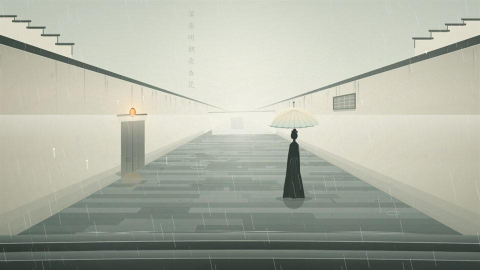
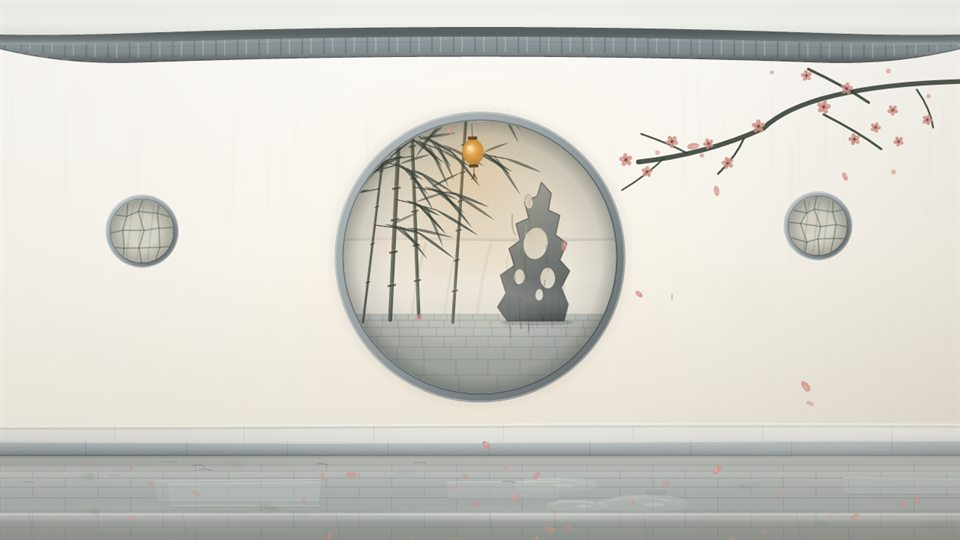
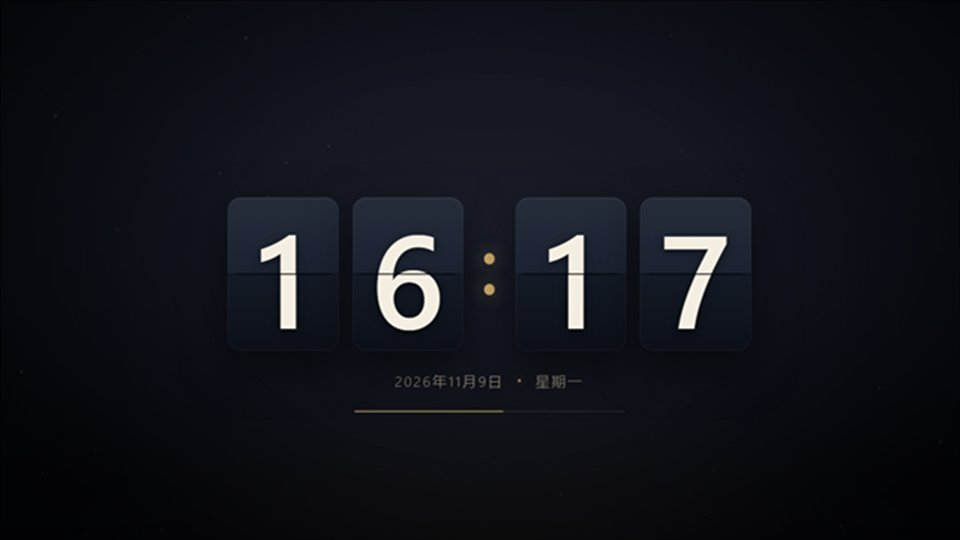
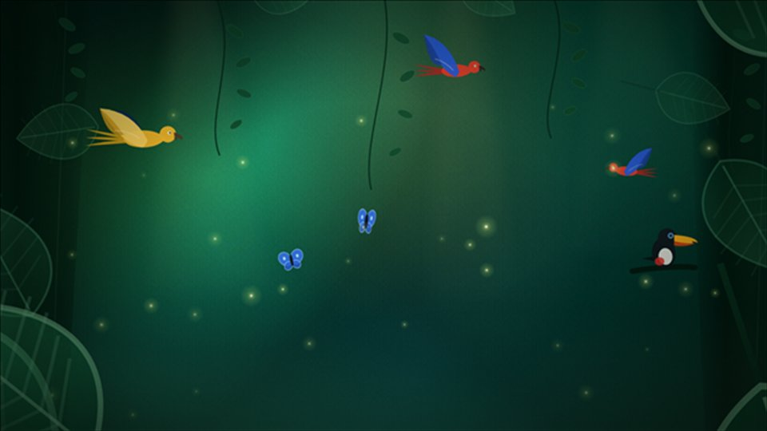
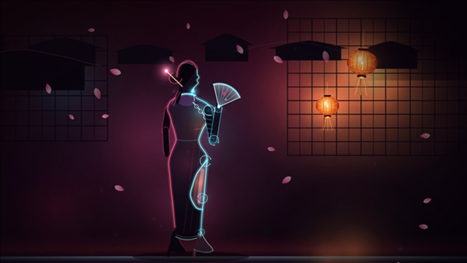

桌面接管
在 WorkerW 下创建透明桌面窗口，图标、选择框、拖拽虚影全部由本程序绘制，壁纸仍由系统绘制。
功能
从图标收纳到便签待办，从天气资讯到网页屏保——火星桌面把每天用得上的桌面能力，收进同一个托盘图标里。
在 WorkerW 下创建透明桌面窗口，图标、选择框、拖拽虚影全部由本程序绘制，壁纸仍由系统绘制。
把桌面图标拖进「盒子」即完成收纳。盒子可拖动、缩放、吸附窗口，一个盒子还能挂多个标签页，位置与内容随退出保存。
一个盒子容纳多个标签页，标签可拖动调整顺序；盒内图标也能直接拖到别的标签或别的盒子，折叠后只留标题栏，桌面瞬间腾出空间。
富文本编辑：加粗、斜体、下划线、颜色、高亮、字号、项目符号与图片；支持锁定、置顶与已关闭便签恢复。
多清单切换、子任务（最多 3 层）、标签、备注、关联文件与截止日期着色，到期通过系统通知提醒。
实时天气、体感温度、空气质量、风向风力与日出日落，附多天预报；失败时提示而不阻塞界面。
多来源、多榜单随手切换，显示「更新于 时间 · 条数」；来源失效时自动切换并提示。
内置定时关机、便签、待办、天气与资讯；也能添加任意外部程序作为工具项，支持随程序启动。
纯色、渐变、固定图片、目录轮播四种壁纸；背景色、外框、圆角、透明度与主题配色联动，切换即时生效。
基于 WTL + WebView2 的全屏网页屏保，可注册为系统屏保；只允许点击右上角按钮退出，避免误触。
整理桌面、添加便签、待办、天气、资讯、工具箱共 6 个全局快捷键，点输入框按下组合键即可自定义。
独立更新器完成清单校验、SHA-256 与签名验证、断点续传与失败回滚，更新历史可随时回看。
界面
设置中心采用卡片式分组与浅色主题，下拉框、圆角与配色统一；切换语言即时生效，无需重启。
屏保
屏保是一个全屏网页，由 WTL + WebView2 渲染：内置极光时钟，也能从「在线屏保」里下载资源包——新加的七套古风主题（江南烟雨、雨巷佳人、月下抚琴、水墨远山、庭院月洞门、灯影秦淮、竹林听雨），以及翻页时钟、星空、雨林与霓虹夜景，双击就换一套。





在线屏保按资源包独立发版：设置中心 →「屏保 → 在线屏保」挑一套下载，双击即可切换，「立即预览」当场看效果；屏保程序本身也能单独更新，不用重装主程序。想放自己的页面，把「网页目录」指过去就行。
深入
火星桌面不替代资源管理器，只在桌面这一层接管绘制与交互——所以原生右键菜单、拖拽、重命名这些习惯都还在。
更新日志
修复：更新完成后可能报「更新后启动失败」，已回滚到旧版本
反馈：去掉阿里云函数计算(FC)的备用中继地址，反馈只走 Cloudflare Worker
修复：1.3.0.2 里便签右键菜单等 Qt 自带文案没有跟着中英文切换
系统设置支持普通权限修改
首个对外发布版本
首个稳定版
系统要求
%LOCALAPPDATA%\ZkDesk常见问题
不会。火星桌面只在桌面这一层接管图标绘制与右键菜单，资源管理器、任务栏和其他系统组件照常工作，卸载后桌面立刻回到系统默认样式。
不会。图标仍然是系统桌面上的真实文件与快捷方式，程序只是接管了绘制与交互；拖进盒子的图标只是换了摆放位置。
支持。图标按显示器分区布局，图标、文字与盒子尺寸跟随系统 DPI 同步缩放。
核心整理功能完全本地运行。联网仅用于检查更新、获取天气与热点资讯；天气与资讯来源失效时会自动降级并提示。
设置中心 →「屏保」→「在线屏保」，选一套点「下载并使用」（已下载过的直接双击）即可切换；「立即预览」会立刻全屏跑一次，「恢复内置」回到自带的极光时钟。屏保页面本身是网页，想换成自己的页面，把「网页目录」指过去即可。
网页屏保使用 WebView2 渲染网页内容。Windows 10 1903 及以上版本通常已内置运行时；未安装时屏保会给出提示。